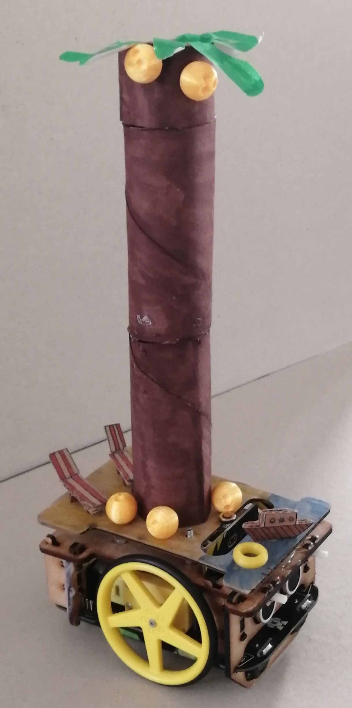
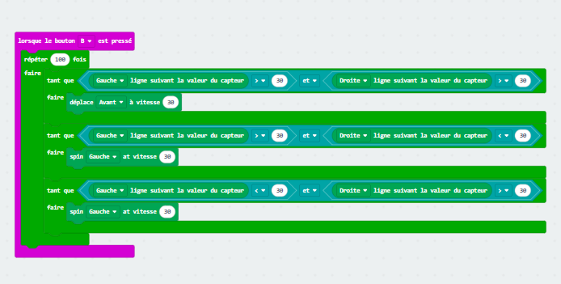
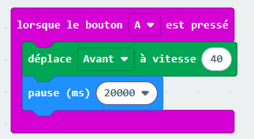
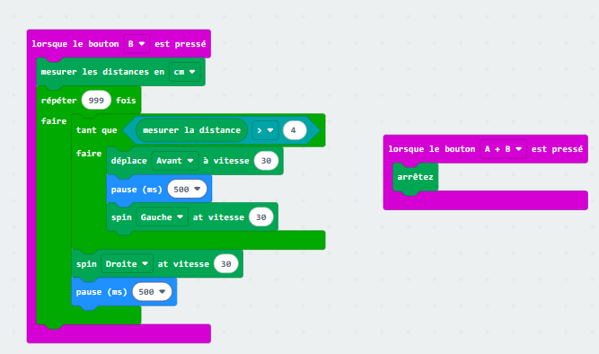
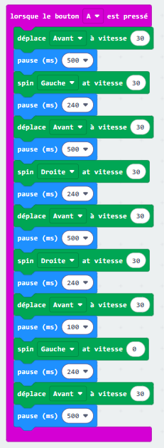
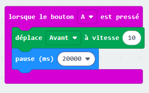

Présentation
Welcome to our project website! We are a team of students who designed and built a robot as part of a collaborative group project. Throughout this experience, we combined our ideas, skills, and creativity to bring a functional and innovative robot to life. This project gave us the opportunity to explore key concepts in robotics, including mechanics, electronics, and programming. Beyond the technical aspects, we also developed essential teamwork and problem-solving skills. Working together meant learning how to communicate effectively, share responsibilities, overcome challenges, and adapt our ideas when things didn’t go as planned. Each obstacle we encountered helped us grow and improve our approach. On this website, you will discover how our robot works, from its design and components to its programming and capabilities. We also present the different solutions we developed to address the challenges we faced along the way. We hope you enjoy exploring our project as much as we enjoyed creating it!
3ème 3
Notre-Dame de Bressuire
2025-2026
Notre Robot
Voici une photo du robot sur lequel nous avons travaillé en classe :

Caractéristiques du robot
- Capteurs infrarouges
- Capteurs de luminosité
- Moteurs pour se déplacer
- Programmation avec MakeCode
Nos Programmes
Voici les programmes que nous avons créés pour faire fonctionner mon robot ( ces programmes ne sont pas forcément les programmes définitifs car ils ont pu être modifiés lors du concours. Nous vous prions de nous excuser pour ce désagrément. ) :
Programme 1 : Sortir du labyrinthe grâce à une trajectoire programée
Ce programme fait avancer le robot en suivant un trajet défini à l’avance. Les mouvements (avancer, tourner à droite ou à gauche) sont programmés manuellement. Le robot ne s’adapte pas à son environnement, il suit simplement les instructions.

Programme 2 : Suivre une ligne noire
Ce programme utilise les capteurs de luminosité pour détecter une ligne noire au sol. Lorsque le robot sort de la ligne, il corrige sa trajectoire automatiquement pour rester dessus. Cela permet un déplacement autonome.

Programme 3 : Avancer pour faire tomber des quilles
Ce programme fait avancer le robot tout droit à une certaine vitesse pour percuter les quilles. Il est simple mais nécessite un bon réglage de la vitesse et de la direction pour être efficace.

Programme 4 : Sortir du labyrinthe grâce à des capteurs infrarouges.
Ce programme utilise les capteurs infrarouges pour détecter les murs. Le robot peut ainsi éviter les obstacles et adapter sa direction automatiquement pour trouver la sortie du labyrinthe. De plus, permettre au robot de s'arrêter lorsque l'on appuie sur le bouton A peut s'avérer utile au cas où le robot continue d'avancer un fois sortie du labyrinthe.

Programme 5 : Déplacer une balle de golf pour la placer dans un trou.
Ce programme permet au robot de suivre un parcours précis pour attraper une balle de golf et la pousser jusqu’à un trou. Il combine plusieurs actions comme avancer, tourner et ajuster sa position.

Programme 6 : Percer des ballons grâce à un programme qui détecte les murs.
Ce programme est le même que celui du labyrinthe avec capteurs. Le robot se déplace en évitant les murs jusqu’à trouver les ballons et les percer.
Programme 7 : Avancer sur une surface inclinée.
Ce programme fait avancer le robot sur une surface inclinée. Il nécessite d’adapter la vitesse des moteurs pour éviter que le robot ne ralentisse ou ne recule.

Objectif du projet
L’objectif de ce projet était de concevoir et programmer un robot capable de réaliser différentes missions, comme suivre une ligne, éviter des obstacles ou sortir d’un labyrinthe. Il avait aussi pour objectif de nous faire développer nos compétences de programation.
Travail de groupe
Dans ce projet, nous avons dû coopérer et se répartir le travail pour une meilleure réalisation de ce travail :
- Les tâches concernant l'esthétique du robot ont été plutôt réalisées par Elia et Alicia
- Celles concernant la programmation ont été majoritairement réalisées par Axel et Giorgio
- Le site a été en grande partie réalisé par Giorgio
Difficultés rencontrées
Nous avons rencontré plusieurs difficultés, notamment :
- La création de la carrosserie et du décors du robot
- Les bugs dans les programmes
- La création de ce site
- Le bouton de démarage du robot
- La création des programes
Conclusion
Ce projet nous a permis d'apprendre plein de choses sur :
- La programmation par blocs avec makecode
- Le fonctionnement des capteurs
- Comment résoudre des problèmes étape par étape (algorithme)
- Le travail en équipe
- La création d'un site internet
Nous avons beaucoup apprécié ce TP, car il nous a permis de voir notre programme prendre vie sur un véritable robot. C’était très satisfaisant de constater concrètement le résultat de notre travail. Cependant, nous avons parfois rencontré des difficultés, notamment lors de la mise au point du programme et des tests, ce qui a demandé du temps et de la persévérance.